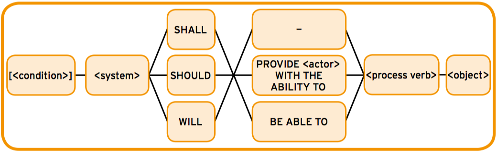
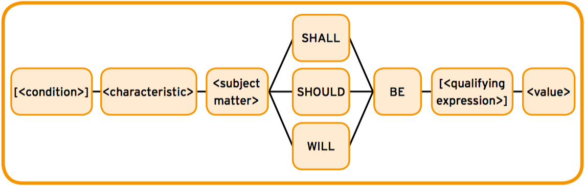
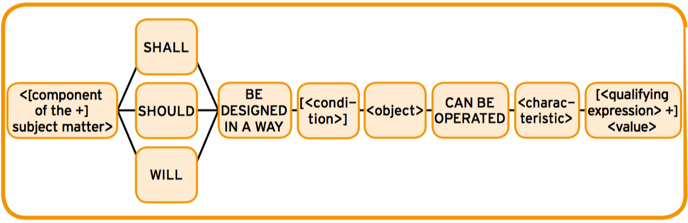
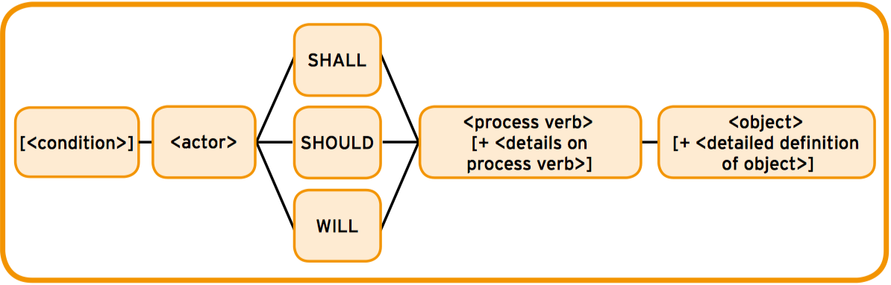
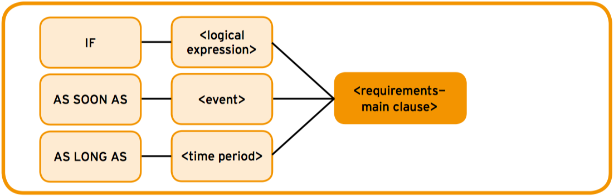
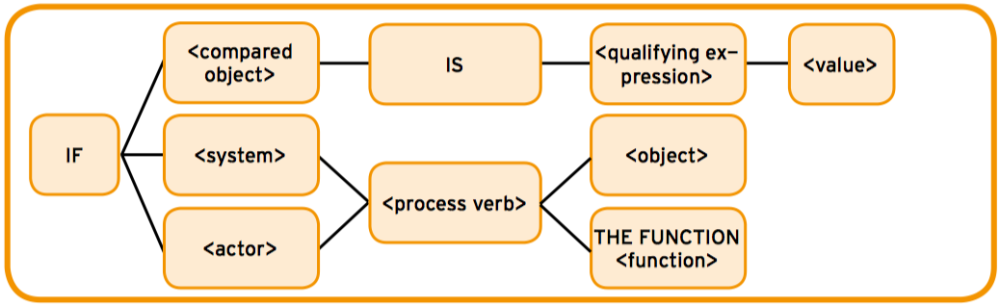
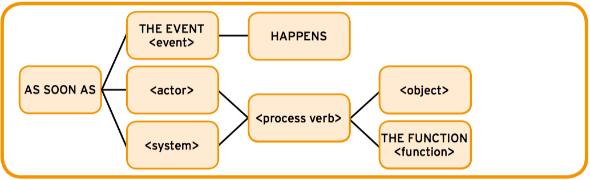
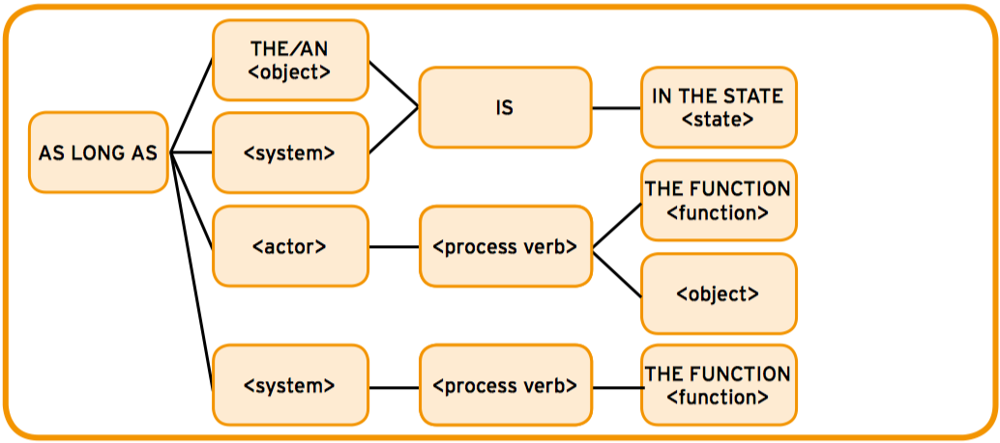

In 2014, Rupp et al. presented the MASTER (Mustergültige Anforderungen - die SOPHIST Templates für Requirements) template-system [RdS14b].
It allows writing requirement specifications through some basic types: functional and non-functional requirements (divided in property, environment and process requirements).
Functional requirements can be specified with the FunctionalMASTeR template, shown in Figure 1.1. The uppercase words represent the template fixed values and the lowercase words with angle brackets represent the attributes that have to be filled in [Gro15].
The elements are:
For example: The document editor shall provide the user with the ability to create new documents.
Property requirements describe properties of the system. PropertyMASTeR template (Figure 1.2) is proposed.
According to Großer [Gro15]:
For example: The design of the website should be responsive.
Technological requirements of the system’s environment are described with EnvironmentMASTeR template (Figure 1.3). The fixed values are designed in a way that make the requirement belongs to the system and not the environment [Gro15].
For example: The charger of the device shall be designed in a way the system can be operated in a range 100-240V/50-60Hz.
Process requirements can be worded with the ProcessMASTeR template (Figure 1.4), which is based on the independent system action version of the FunctionalMASTeR template. Process requirements are related to activities or legal-contractual requirements, as well as non-functional requirements. In this template, the subject of the requirement is an actor and not the system [Gro15].
For example: The software developers should work according to the Personal Software Process (PSP).
In the case that the functionality is only given or provided under certain logical or temporal conditions, the ConditionMASTeR template must be applied (Figure 1.5) [RdS14a].
For example: If the server could not found what was requested.
A more precise specification for conditions can be obtained by the use of LogicMASTeR, EventMASTeR or TimeMASTeR templates.
LogicMASTeR (Figure 1.6) is used to specify logical conditions. The logical statement is made through a compared object, an actor or a system [RdS14b].
With EventMASTeR (Figure 1.7), requirements are initiated as soon as the event condition is satisfied. The term event summarizes the possible events that may affect the system [RdS14b].
TimeMASTeR (Figure 1.8) is used to specify a certain period of time when a system or object may have temporary behaviours. Both, conditions and requirements, end at the same time [RdS14b].
EARS (Easy Approach to Requirements Syntax) template-system was created by Mavin et al. and presented at the 17th IEEE International Requirements Engineering Conference [MWHN09].
<optional preconditions> <optional trigger> the <system name> shall <system response>
Listing 1.1: Generic requirement syntax.
The simplest structure of EARS system is the generic requirement syntax (shown in Listing 1.1). According to Marvin et al. [MWHN09], their elements are:
Mavin et al. stated that the generic requirement syntax is specialized into four types (Ubiquitous, Event-driven, Unwanted behaviours, State-driven and Optional features), described in the following subsections.
An ubiquitous requirement defines a fundamental property of the system and has no preconditions or trigger. The format is shown in Listing 1.2.
The <system name> shall <system response>
Listing 1.2: Ubiquitous requirements format.
For example: The software shall be written in Java.
An Event-driven requirement is activated only when a trigger occurs or is detected. It uses the keyword WHEN. Listing 1.3 shows its format.
WHEN <optional preconditions> <optional trigger> the <system name> shall <system response>
Listing 1.3: Event-driven requirements format.
For example: When a DVD is inserted into the DVD player, the OS shall spin up the optical drive.
Requirements for unwanted behaviours (failures, error conditions, disturbances, deviations...) use IF and THEN keywords and have the format shown in Listing 1.4.
IF <optional preconditions> <optional trigger>, THEN the <system name> shall <system response>
Listing 1.4: Unwanted behaviours format.
For example: If the memory checksum is invalid, then the software shall display an error message.
State-driven requirements are active while the system is in a specific state. They use the keyword WHILE or DURING (Listing 1.5).
WHILE <in a specific state> the <system name> shall <system response>
Listing 1.5: Unwanted behaviours format.
For example: While the autopilot is engaged, the software shall display a visual indication to the pilot.
Optional requirements are invoked only if the system includes a special feature. They use WHERE keyword, as shown in Listing 1.6.
WHERE <feature is included> the <system name> shall <system response>
Listing 1.6: Optional requirements format..
For example: Where a HDMI port is present, the software shall allow the user to select HD content for viewing.
Requirements with complex conditional clauses can be defined with a combination of the keywords WHEN, IF and THEN, WHILE and WHERE.
For example: When the landing gear button is depressed once, if the software detects that the landing gear does not lock into position, then the software shall sound an alarm.
[Gro15] Katharina Großer. Investigating the use of ontology techniques as a support for on-board software requirement engineering, 2015.
[MWHN09] A. Mavin, P. Wilkinson, A. Harwood, and M. Novak. EARS (Easy Approach to Requirements Syntax). 17th IEEE International Requirements Engineering Conference, 2009.
[RdS14a] Chris Rupp and die SOPHISTen. Requirements Templates - The Blueprint of your Requirement. SOPHIST GmbH, 2014.
[RdS14b] Chris Rupp and die SOPHISTen. Schablonen für alle Fälle. SOPHIST GmbH, 2014.
Specify your requirements here.
To create a new MASTER requirement or a new term, use the Controls menu.
{{functionalreq[0].to_string}}
{{propertyreq[0].to_string}}
{{environmentreq[0].to_string}}
{{processreq[0].to_string}}
{{condition[1].to_string}}
Specify your requirements here.
To create a new EARS requirement or a new term, use the Controls menu.
{{ubiquitousreq[0].to_string}}
{{eventreq[0].to_string}}
{{unwantedreq[0].to_string}}
{{statereq[0].to_string}}
{{optionalreq[0].to_string}}
{{complexreq[0].to_string}}
Term-{{$index+1}} {{term.name}}: {{term.definition ||"-"}}
Define your terms here.
To create a new term, use the Controls menu.
To see the results, please create a new requirement.
Generated with Requirements generator
Term-{{$index+1}} {{term.name}}: {{term.definition}}
FUN-RQ-{{$index+1}} {{functionalreq[0].to_string}}
PRT-RQ-{{$index+1}} {{propertyreq[0].to_string}}
EN-RQ-{{$index+1}} {{environmentreq[0].to_string}}
PRO-RQ-{{$index+1}} {{processreq[0].to_string}}
UB-RQ-{{$index+1}} {{ubiquitousreq[0].to_string}}
EVD-RQ-{{$index+1}} {{eventreq[0].to_string}}
UWB-RQ-{{$index+1}} {{unwantedreq[0].to_string}}
STD-RQ-{{$index+1}} {{statereq[0].to_string}}
OPF-RQ-{{$index+1}} {{optionalreq[0].to_string}}
CX-RQ-{{$index+1}} {{complexreq[0].to_string}}